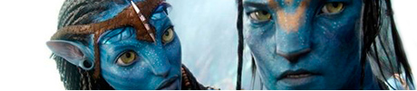

news
CONTACT
Ukrain,Chuguev
Klugino-Bashkirovka
tel.: +8068314833
e-mail: anastasiya.serbinovskaya@mail.ru
Klugino-Bashkirovka
tel.: +8068314833
e-mail: anastasiya.serbinovskaya@mail.ru
Paula Malcolmson’s Trixie, a prostitute in the Western series Deadville, became the moral centre of the programme as it evolved (Credit: HBO)
Breaking Bad's Wendy, by contrast, is initially not much more than a sight gag, though one whose character grows over her three appearances in the series. At first, she's the spaced-out, meth-addicted sex partner of Jesse Pinkman (Aaron Paul), and is used as a this-could-be-your-life example by DEA Agent Hank Schrader (Dean Norris) when he cluelessly attempts to caution his nephew about the dangers of drug use. But she takes on new shades in her third and final appearance, during a sex montage scored to The Association's upbeat pop hit Windy. With every customer she encounters she becomes that much more of a tragic figure.